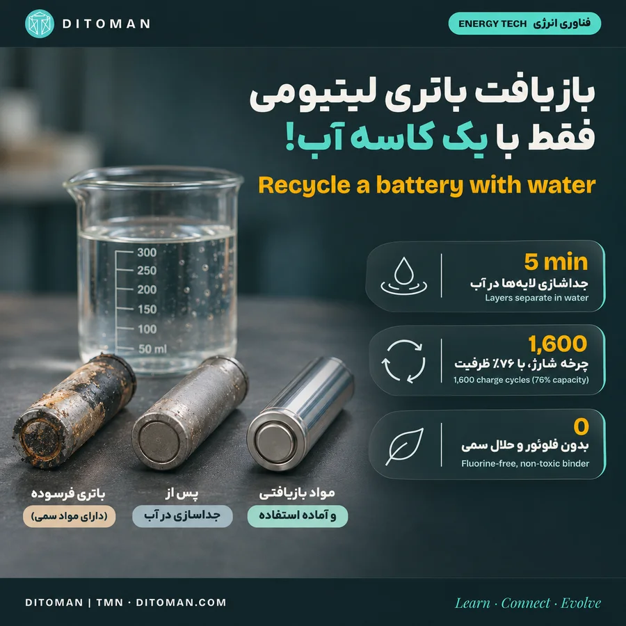
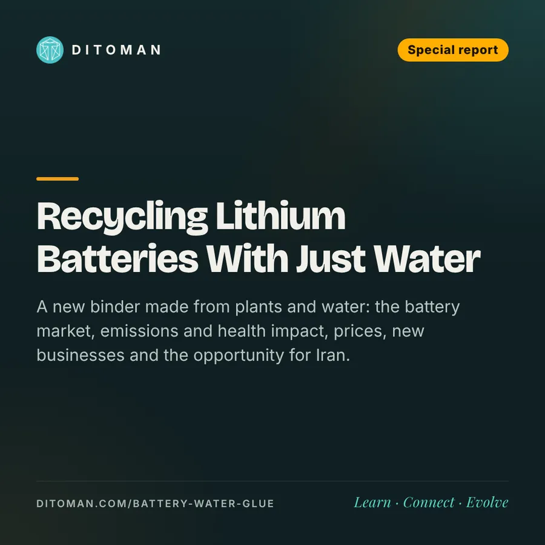

بازیافت باتری لیتیومی فقط با یک کاسه آب؛ چسبی که صنعت باتری را سبزتر میکند
Recycling lithium batteries with just water: the glue that could make batteries greener
چسب تازهای از گیاه و آب؛ بازار باتری، اثر بر گازهای گلخانهای و سلامت، قیمت، کسبوکارهای تازه و فرصت ایران.
A new binder made from plants and water: the battery market, emissions and health impact, prices, new businesses and the opportunity for Iran.
0. در یک نگاه
پژوهشگران دانشگاه کالیفرنیا سندیگو، با همکاری مؤسسهی تحقیقاتی تویوتا در آمریکای شمالی، چسبی برای باتریهای لیتیومی ساختهاند که در آب حل میشود. این یعنی ساخت باتری بدون حلال سمی، و بازیافت آن با خیساندن قطعات در آب. پژوهش ۹ اکتبر ۲۰۲۶ در مجلهی Nature Communications منتشر شد.
| شاخص | عدد |
|---|---|
| زمان جدا شدن لایهها در آب | ۵ دقیقه (در برابر حدود ۲ ساعت در حلال سمی) |
| عمر در آزمایشگاه | ۱٬۶۰۰ چرخهی شارژ با حدود ۷۶٪ ظرفیت |
| دمای خشک کردن الکترود | ۶۰ درجه برای ۴ ساعت (در برابر ۱۲۰ درجهی خلأ برای ۱۲ ساعت) |
| کاهش مصرف انرژی ساخت سلول (مدل) | حدود ۹٪ |
| کاهش انتشار گازهای گلخانهای ساخت سلول (مدل) | حدود ۷٪ |
| بازار جهانی باتری لیتیومی، ۲۰۲۵ | بیش از ۱۵۰ میلیارد دلار (آژانس بینالمللی انرژی) |
عددهای کاهش انرژی و انتشار، تخمین مدلسازی پژوهشگران است، نه اندازهگیری در کارخانه. این فناوری هنوز در مرحلهی آزمایشگاه است.
1. داخل باتری، چسب کجاست؟
هر باتری لیتیومی دو الکترود دارد. روی هر الکترود، پودرهای فعال (مثل لیتیومآهنفسفات یا نیکل در سمت مثبت، و گرافیت در سمت منفی) روی ورقهای نازک از آلومینیوم یا مس پخش شدهاند. چیزی که این پودرها را کنار هم و روی ورقه نگه میدارد، بایندر یا همان چسب است.
- سهمش کم است: چسب فقط چند درصد وزن الکترود است
- اثرش بزرگ است: نوع چسب تعیین میکند الکترود با چه حلالی ساخته شود، چقدر انرژی برای خشک کردن بخواهد، و در پایان عمر باتری، چقدر راحت از هم جدا شود
2. مشکل چسب رایج
بیشتر الکترودهای مثبت امروز با چسبی فلوئوردار به نام PVDF ساخته میشوند.
- حلال سمی: PVDF فقط در حلالی به نام NMP حل میشود؛ مادهای که برای تولیدمثل انسان سمی شناخته شده و در اروپا استفادهاش محدودیت دارد
- انرژی زیاد: خشک کردن الکترود و جمعآوری دوبارهی حلال، کورههای بزرگ و سیستمهای بازیافت حلال لازم دارد
- بازیافت سخت: PVDF آنقدر پایدار است که جدا کردنش حرارت بالا یا مواد شیمیایی خورنده میخواهد
- پسماند فلوئوری: در حرارت دادن، ترکیبات فلوئوری خطرناک مثل اسید فلوئوریدریک تولید میشود؛ PVDF خودش هم از خانوادهی PFAS است که اروپا دربارهی محدود کردنش بحث میکند
سرپرست این پژوهش، ژنگ چن، خلاصهاش کرده: همان پایداری که باتری را خوب میکند، بازیافتش را هم سخت میکند.
3. چسب تازه چیست؟
| جزء | نقش |
|---|---|
| پلیاکریلیک اسید | انعطاف و پخش یکنواخت روی ورقه |
| کربوکسیمتیل سلولز (منشأ گیاهی) | استحکام و چسبندگی |
| اسید سیتریک | پیوند دادن دو جزء به یک شبکهی محکم |
همهچیز در آب ساخته میشود؛ بدون فلوئور و بدون حلال سمی. اسم این ترکیب در مقاله، PCC است.
4. نتایج آزمایشگاه
- کارایی اولیه: ظرفیت اولیهی سلول با چسب جدید، تقریباً برابر چسب رایج بود (۱۶۰٫۲ در برابر ۱۶۰٫۵ میلیآمپرساعت بر گرم)
- عمر: یک سلول کیسهای LFP بعد از ۱٬۶۰۰ چرخهی شارژ، حدود ۷۶٪ ظرفیتش را حفظ کرد
- سازگاری: با LFP، کاتدهای پرنیکل، و آندهای گرافیت و سیلیکون آزمایش شد
- بازیافت: لایهها در ۵ دقیقه همزدن در آب، بدون باقیمانده از ورقهها جدا شدند
- چرخهی کامل: از مواد بازیافتشده، باتری تازه ساخته شد که مثل باتری با مواد نو کار کرد
آنچه هنوز ثابت نشده: عملکرد در شارژ سریع، ساخت الکترودهای ضخیم در خط تولید پیوسته، و بازیافت از باتریهای واقعیِ مستعمل.
5. بازار: این کشف در چه دنیایی آمده است؟
| شاخص | عدد |
|---|---|
| باتری خودروهای برقی نصبشده در ۲۰۲۵ | حدود ۱٬۲۰۰ گیگاواتساعت، ۳۰٪ رشد نسبت به ۲۰۲۴ |
| سهم خودروهای برقی از کل باتریهای لیتیومی | بیش از ۷۰٪ |
| ظرفیت تولید جهانی سلول، پایان ۲۰۲۵ | بیش از ۴ تراواتساعت |
| سهم چین از ظرفیت تولید | بیش از ۸۰٪ |
| سهم چین از ظرفیت بازیافت | بیش از ۸۵٪ |
| کاهش میانگین قیمت باتری در ۲۰۲۵ | ۸٪ |
| بازار جهانی بازیافت باتری (همهی انواع) | ۱۱٫۹ میلیارد دلار در ۲۰۲۴ به ۱۹٫۸ میلیارد دلار در ۲۰۳۰ |
یعنی دنیا هر سال صدها میلیون سلول باتری میسازد و هر روز بیشتر. طبق آژانس بینالمللی انرژی، باتریهای مستعمل خودروهای برقی حدود اواسط دههی ۲۰۳۰ به منبع اصلی بازیافت تبدیل میشوند؛ تا آن موقع، بیشتر بازیافت از ضایعات کارخانههاست. این یعنی فرصت طراحی باتری برای بازیافت، همین حالاست.
6. اثر مالی: باتری ارزانتر میشود؟
پاسخ کوتاه: احتمالاً کمی، نه یکشبه.
- در ساخت: حذف حلال NMP، کورههای کوچکتر و دمای پایینتر، و حذف سیستم بازیافت حلال، هزینهی سرمایهگذاری و انرژی کارخانه را کم میکند
- در بازیافت: جداسازی با آب، بهجای کوره یا حلال، سادهتر و ارزانتر است و مواد فعال را تمیزتر برمیگرداند؛ و مواد تمیزتر یعنی ارزش بالاتر
- محدودیت: چسب فقط بخش کوچکی از هزینهی سلول است؛ بیشترین هزینه مال مواد کاتد مثل لیتیوم و نیکل است. پس اثر روی قیمت نهایی باتری محدود است، اما در مقیاس میلیاردها دلار تولید سالانه، همین درصدهای کوچک هم پول بزرگی میشود
پژوهش هیچ رقم مشخصی برای کاهش قیمت نهایی باتری ارائه نکرده است.
7. اثر زیستمحیطی و گازهای گلخانهای
- ساخت هر سلول: طبق مدل پژوهشگران، انتشار از حدود ۱۲٫۸ به ۱۱٫۹ کیلوگرم دیاکسیدکربن معادل برای هر سلول ۰٫۲۵ کیلوواتی کم میشود؛ یعنی حدود ۷٪ کمتر، و مصرف انرژی حدود ۹٪ کمتر
- در مقیاس جهانی: ساخت باتری بهطور میانگین حدود دهها کیلوگرم دیاکسیدکربن برای هر کیلوواتساعت انتشار دارد. وقتی دنیا سالانه بیش از ۱٬۰۰۰ گیگاواتساعت باتری میسازد، چند درصد کاهش، معادل میلیونها تن دیاکسیدکربن در سال است
- بدون فلوئور: نبود PVDF یعنی نبود پسماند و گازهای فلوئوری در کورههای بازیافت
- بازگشت مواد: بازیافت آسانتر یعنی استخراج کمتر لیتیوم، نیکل و کبالت از معدن، که خودش پرانرژی و پرآب است
رقم «میلیونها تن» یک تخمین دامنهای دیتومان بر پایهی عددهای منتشرشده است، نه رقمی از خود پژوهش.
8. اثر بر سلامت
- کارگران کارخانه: حذف NMP یعنی کارگران خط تولید دیگر در معرض حلالی نیستند که برای تولیدمثل سمی شناخته شده است
- کارگران بازیافت: جداسازی با آب، بهجای کورههای داغ و اسیدهای قوی، خطر گازهای سمی و سوختگی شیمیایی را کم میکند
- محیط اطراف: کاهش ترکیبات فلوئوری (از خانوادهی PFAS که به «مواد شیمیایی همیشگی» معروفاند) یعنی آلودگی کمتر آب و خاک
- بازیافت غیررسمی: در بسیاری از کشورها، باتریها در کارگاههای غیررسمی و بدون ایمنی باز میشوند. روشی ساده و بیخطرتر میتواند این زنجیره را ایمنتر کند
9. قانونها هم به این سمت میروند
مقررات باتری اتحادیهی اروپا، اهداف مشخصی برای بازیافت تعیین کرده است:
| هدف | زمان |
|---|---|
| بازیابی ۵۰٪ لیتیوم از باتریهای مستعمل | پایان ۲۰۲۷ |
| بازیابی ۸۰٪ لیتیوم | پایان ۲۰۳۱ |
| حداقل ۶٪ لیتیوم بازیافتی در باتریهای نو | اوت ۲۰۳۱ |
| حداقل ۱۲٪ لیتیوم بازیافتی | ۲۰۳۶ |
هر فناوریای که بازیافت را ارزانتر و تمیزتر کند، رسیدن به این اهداف را آسانتر میکند.
10. چه کسبوکارهایی شکل میگیرد؟
- تولید چسب سبز: سلولز و اسید سیتریک مواد ارزان و در دسترساند؛ تولید بایندرهای آبی میتواند صنعتی تازه باشد
- بازیافت مستقیم: شرکتهایی که بهجای ذوب، مواد فعال را مستقیم بازیابی و بازسازی میکنند
- جمعآوری و لجستیک: شبکهی جمعآوری باتریهای مستعمل گوشی، لپتاپ، موتور و خودروی برقی
- عمر دوم: استفاده از باتریهای خودرو، پیش از بازیافت، برای ذخیرهی انرژی خورشیدی
- تجهیزات: خطوط پوششدهی و خشککنهای کممصرف برای کارخانهها
- مشاوره و استاندارد: پیروی از قوانین تازهی بازیافت و گذرنامهی باتری در اروپا
11. ایران چه نسبتی با این ماجرا دارد؟
- باتری همهجا هست: گوشی، لپتاپ، موتورسیکلت برقی، پنلهای خورشیدی خانگی و ذخیرهسازهای برق؛ و همه یک روز به پایان عمر میرسند
- بازیافت هنوز ضعیف است: بخش بزرگی از باتریهای مستعمل در زبالهی عادی یا کارگاههای غیررسمی سر در میآورند
- فرصت: روشهای سادهتر و کمخطرتر بازیافت، برای راهاندازی واحدهای کوچک و متوسط بازیافت مناسبترند؛ و مواد اولیهی چسب جدید هم در دسترس است
دادهی رسمی و قابلاتکایی دربارهی حجم باتریهای مستعمل در ایران در دسترس نیست.
12. واقعبینی و قدمهای بعدی
- این فناوری هنوز در آزمایشگاه است و باید در مقیاس صنعتی اثبات شود
- چسبهای آبی در کاتدهای پرنیکل میتوانند به ورقهی آلومینیوم آسیب بزنند؛ پژوهشگران باید این را در تولید انبوه حل کنند
- عملکرد در شارژ سریع و بازیافت از باتریهای واقعیِ مستعمل هنوز آزمایش نشده
- تیم پژوهشی میگوید برای تولید صنعتی و تجاریسازی، دنبال همکاری با صنعت است
13. نگاه دیتومان
آیندهی باتری فقط به ساخت باتری بهتر نیست؛ به این است که از روز اول، برای بازیافت طراحی شود.
گاهی بزرگترین تحول، از سادهترین ماده میآید: آب.
اگر صنعت باتری، که هر سال بزرگتر میشود، فقط چند درصد پاکتر و سادهتر شود، نتیجه برای هوا، سلامت کارگران و جیب مصرفکننده، بزرگ خواهد بود.
بیشتر بخوانید
منابع
- Interesting Engineering: water-based binder for lithium-ion battery recycling
- chemeurope / UC San Diego: battery manufacturing and recycling could go green with this glue
- Xenospectrum: detailed results of the PCC binder study
- IEA: Global EV Outlook 2026, electric vehicle batteries
- Mercom: global lithium-ion market surpassed $150 billion in 2025 (IEA)
- BCC Research: battery recycling market to reach $19.8 billion by 2030
- IEA: EU Sustainable Batteries Regulation
- electrive: how much CO2 does battery production really emit
- PFAS in lithium-ion batteries (peer-reviewed review, PMC)
آخرین بازبینی: ۲۲ آبان ۱۴۰۵. این فناوری در مرحله آزمایشگاه است؛ ارقام کاهش انرژی و انتشار، تخمین مدلسازی است.